ทฤษฎี · WikiSkill
WikiSkill ในภาพเดียว: มี Wiki คั่นกลางระหว่าง Trace ดิบกับสกิล
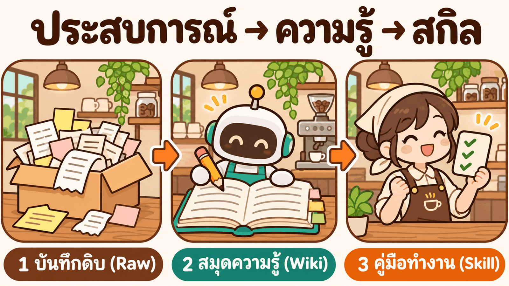
ทั้งทฤษฎีใน 1 หน้า: ปัญหา → แนวคิด → วงรอบ → เหตุผล → ผล
ปัญหา
วิธีปรับสกิลอัตโนมัติวิเคราะห์ Trace ใหม่ทุกรอบ แต่สิ่งที่วิเคราะห์ได้ถูกใช้ครั้งเดียวแล้วหายไป รอบถัดไปจึงลืม เสนอซ้ำ และมองไม่เห็นปัญหาที่ค่อย ๆ สะสม (ขั้น 2)
แนวคิด
แยกของ 3 อย่างออกจากกัน: Trace (เกิดอะไรขึ้น) · Wiki (ทำไม) · สกิล (ต้องทำอย่างไร) และให้ Wiki อยู่ถาวร (ขั้น 3–4)
วงรอบ
Agent ทำโจทย์ → Wiki Maintainer จดความรู้ลง Wiki → Skill Proposer เสนอแก้สกิล 1 ตัวจาก Wiki → วัดด้วย Validation → รับ หรือย้อนกลับเฉพาะสกิล (ขั้น 5–7)
ทำไมออกแบบแบบนี้
10 การตัดสินใจ แต่ละข้อมีคำถาม ทางเลือก เหตุผล และหลักฐาน (ขั้น 8)
ผลในเปเปอร์
ชนะวิธีก่อนหน้าทุกโมเดล · ตัด Wiki ออก คะแนนเฉลี่ยลดจาก 63.7% เหลือ 48.7% · ข้อเสนอ 8 ครั้งผ่าน Gate ราว 2–3 ครั้ง (ขั้น 9)
ผลในบทนี้
เริ่มจากไม่มีสกิล ได้ 97.9% ใน 2 รอบ และ 100% บน Test Set · ค้นพบมาตรฐานการเขียนโค้ดเอง แต่ไม่พบนโยบายธุรกิจ Wiki จดไว้ว่ายังไม่ยืนยัน (ขั้น 10)
สไลด์ชุดนี้เดินตามลำดับนี้
01_theory/README.md · ภาคปฏิบัติ (LAB 0–5) อยู่ใน สไลด์ของบทแนวคิดและวิธีการ
ทุกวิธีปรับสกิลทำอะไรเหมือนกัน · วงรอบเดิมขาดอะไร · "คอมไพล์ประสบการณ์เป็นความรู้" คืออะไร
ทุกวิธีปรับสกิลทำ 4 ขั้นเดียวกัน: Rollout → Analyze → Propose → Gate
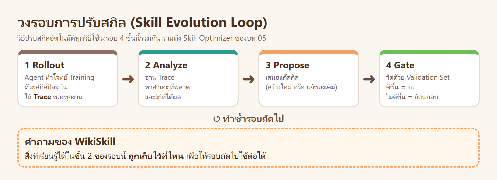
วิธีปรับสกิลอัตโนมัติทุกวิธีทำ 4 ขั้นนี้ซ้ำ รวมถึงบท 05
ทบทวนจากบท 05: 4 ขั้นของวงรอบ และคำศัพท์ที่ใช้ทั้งชุด
1Rollout
Agent ทำโจทย์ Training ด้วยสกิลปัจจุบัน
ในบท 05: คำสั่ง run
2Analyze
อ่าน Trace หาสาเหตุ
ในบท 05: Claude อ่าน failures แล้วจดลง ISSUES.md
3Propose
เสนอแก้สกิล
ในบท 05: Claude คัดลอก v1 เป็น v2 แล้วแก้ไม่เกิน 3 จุด
4Gate
วัด Validation แล้วรับหรือทิ้ง
ในบท 05: คำสั่ง gate
Trace
บันทึกทุกขั้นที่ Agent ทำใน 1 งาน: คำสั่ง โค้ด ผลที่ได้ และผลของตัวตรวจ
สกิล (Skill)
โฟลเดอร์ที่มี SKILL.md = ขั้นตอนที่ Agent อ่านแล้วทำตาม
Training / Validation / Test Set
โจทย์ที่ใช้หาข้อพลาด / โจทย์ที่ใช้ตัดสินรับหรือทิ้ง / โจทย์ที่ใช้วัดผลสุดท้าย
R_best
คะแนน Validation ที่ดีที่สุดเท่าที่เคยได้
ปัญหา: ข้อสรุปของแต่ละรอบถูกใช้ครั้งเดียว แล้วหายไปกับประวัติ
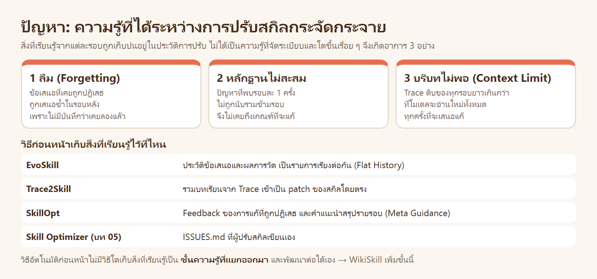
ขั้น 2 ของวงรอบ (Analyze) ได้ข้อสรุปออกมาทุกรอบ เช่น "Agent ปัดเศษทุกขั้นจึงคลาด 1 สตางค์" แต่ข้อสรุปนี้ถูกใช้ครั้งเดียวตอนแก้สกิลของรอบนั้น แล้วหายไปกับประวัติ
3 อาการที่เกิดเมื่อความรู้ไม่มีที่เก็บ
1ลืม
รอบ 3 เสนอวิธีที่รอบ 1 ลองแล้วถูกปฏิเสธ เพราะไม่มีที่ใดจดว่าเคยลอง
2หลักฐานไม่สะสม
ปัญหาที่พบรอบละ 1 Trace ถูกมองว่าบังเอิญทุกรอบ ทั้งที่รวม 4 รอบแล้วพบ 4 ครั้ง
3บริบทไม่พอ
8 รอบ × 12 Trace × 15,000 ตัวอักษร ≈ 1.4 ล้านตัวอักษร อ่านใหม่ทุกครั้งไม่ได้
บท 05 เคยเจอปัญหานี้: ISSUES.md คือ Wiki ที่เขียนด้วยมือ

v0 พบ "ปัดเศษทุกขั้น" แค่ 1 จาก 12 Trial จึงยังไม่แก้v1 Validation ได้ 90% เพราะสาเหตุเดียวกันv2 แก้ได้ เพราะ Claude จดปัญหานั้นไว้ใน ISSUES.md ตั้งแต่ v0ISSUES.md ของบท 05 คือ Wiki ที่เขียนด้วยมือ · WikiSkill ทำสิ่งนี้ให้เป็นระบบและอัตโนมัติคอมไพล์ประสบการณ์เป็นความรู้: ของดิบ → สิ่งที่เรียบเรียงแล้ว → สิ่งที่ใช้ทำงาน
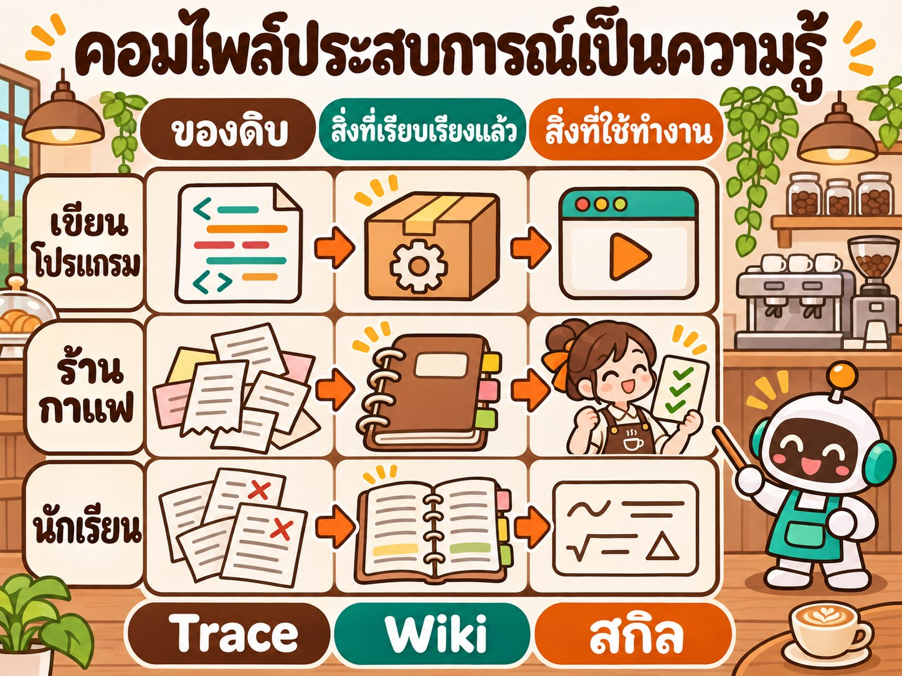
raw/) → Wiki (wiki/) → สกิล (skills/)Trace · Wiki · สกิล ตอบคำถามคนละข้อ จึงไม่ควรเก็บรวมกัน
Trace
ตอบคำถาม: เกิดอะไรขึ้น ในงานนี้
ขนาด: ยาวมาก (สูงสุด 15,000 ตัวอักษรต่องาน)
ใครใช้: ผู้วิเคราะห์
Wiki
ตอบคำถาม: ทำไม จึงเกิด และเคยลองแก้อย่างไร
ขนาด: กลาง (10–30 บรรทัดต่อ pattern)
ใครใช้: ผู้ปรับสกิล
สกิล
ตอบคำถาม: ต้องทำอย่างไร ในงานถัดไป
ขนาด: สั้น
ใครใช้: Agent ที่ทำงาน
ประโยคที่ต้องจำ
สกิลเป็นเพียง "ฉบับย่อที่ใช้งานได้" ของความรู้ ณ ขณะหนึ่ง
ความรู้ที่อยู่เบื้องหลัง (ทำไมจึงมีกฎข้อนี้ เคยลองอะไรแล้วไม่ได้ผล) ต้องมีที่อยู่ของตัวเอง
สถาปัตยกรรม 3 ชั้น: Raw Layer · Wiki Layer · Skills Layer

แต่ละชั้นมี ผู้เขียน ผู้อ่าน และวิธีเปลี่ยนแปลง ต่างกัน · มีเพียง Skills Layer ที่ย้อนกลับได้
workspace จริงหลังรันจบ: 3 ชั้น = 3 โฟลเดอร์
runs/w1/
├── raw/iter-01/ raw/iter-02/ Raw Layer
│ ├── traces/t1-cafe-bill-r1.md … Trace รอบละ 12 ไฟล์ (4 โจทย์ × 3 รอบ)
│ └── summary.md ตารางผลของ Trace ทั้ง 12
├── wiki/ Wiki Layer
│ ├── index.md สารบัญ 7 บรรทัด
│ ├── patterns/ 7 หน้า (26–44 บรรทัดต่อหน้า)
│ ├── log.md บันทึกของ Maintainer รายรอบ
│ └── skill-impact.md บันทึกของโปรแกรม: ข้อเสนอ diff คะแนน ผล
├── skills/solve-py-contract/ Skills Layer
│ ├── SKILL.md 107 บรรทัด · Agent อ่านไฟล์นี้
│ └── PURPOSE.md สกิลนี้แก้ pattern ใดใน wiki
├── history/iter-01/ history/iter-02/ หลักฐานของรอบ: สิ่งที่แต่ละบทบาทได้รับและตอบ
└── state.json สถานะของวงรอบ (k · R_best · ประวัติ)init สร้าง 3 โฟลเดอร์นี้ว่าง ๆ (S₀ = ∅, W₀ = ∅) · Raw เขียนครั้งเดียวตอน rollout และไม่มีคำสั่งใดกลับไปแก้ · Wiki เปลี่ยนตอน maintain และ gate · Skills เปลี่ยนตอน gate เท่านั้น (รูปแบบ ข้อ 2)เรื่องเดียวกัน เขียนต่างกันใน 3 ชั้น: ปัญหา "รันเป็นโปรแกรมไม่ได้"ผลจริง runs/w1
ชั้น 1 · Raw บอกว่า เกิดอะไรขึ้น ในงานนี้
- ✗ `cli_ok`: stdin {"amount": 20000, "tier": "gold", "birthday": false} ต้องได้ {"ok": true, "result": 500} exit 0 แต่ได้ exit 0 stdout (ว่าง)ชั้น 2 · Wiki บอกว่า ทำไม และรวมหลักฐานจากหลายงาน
## สาเหตุ
- Agent เขียน `solve.py` เป็นไฟล์ที่มีแต่ฟังก์ชัน ไม่มีบล็อก `if __name__ == "__main__":` …
- โจทย์ไม่ได้เอ่ยถึงโหมด CLI และไม่มีสกิลบอก Agent จึงไม่รู้ว่าต้องทำ
## หลักฐาน
งานที่ล้ม: ทั้ง 5 Trace ใช้ `cat > solve.py` หรือ Write เฉพาะนิยามฟังก์ชัน ไม่มีโค้ดอ่าน stdin
## อัปเดตรอบ 2: แก้ได้แล้ว
- `cli_ok` และ `cli_error` ผ่านครบในทั้ง 7 Trace ที่สุ่มมา …ชั้น 3 · Skill บอกว่า ต้องทำอย่างไร ไม่มีชื่อโจทย์ ไม่มีหลักฐาน
## 2) โหมด CLI ท้าย solve.py
- สำเร็จ: stdout เป็น `{"ok": true, "result": ...}` exit 0
- ผิดพลาด: stdout เป็น `{"ok": false, "error": "..."}` exit 2 และห้ามมี tracebackจากงาน 1 งาน → หลักฐานจากหลายงาน → ทุกงานในอนาคต
Raw
พูดถึงงานกี่งาน: 1 งาน
มีชื่อโจทย์และค่าของโจทย์หรือไม่: มี
เปลี่ยนเมื่อใด: ไม่เปลี่ยน
Wiki
พูดถึงงานกี่งาน: 5 งานในรอบ 1 · 7 งานในรอบ 2
มีชื่อโจทย์และค่าของโจทย์หรือไม่: มี (เป็นหลักฐาน)
เปลี่ยนเมื่อใด: ทุกรอบ (เติมสถานะล่าสุด)
Skill
พูดถึงงานกี่งาน: ทุกงานในอนาคต
มีชื่อโจทย์และค่าของโจทย์หรือไม่: ไม่มี
เปลี่ยนเมื่อใด: เมื่อข้อเสนอผ่าน Gate
ส่วนประกอบ 4 ตัว: แต่ละตัวเห็นและแก้ได้เฉพาะสิ่งที่จำเป็นต่อหน้าที่
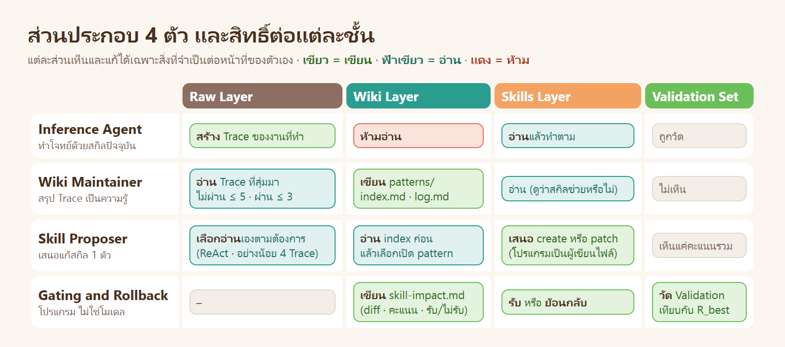
Inference Agent ห้ามอ่าน Wiki Layer · Gating and Rollback เป็นโปรแกรม ไม่ใช่โมเดล
ใครรับอะไร ส่งอะไร และเรียกโมเดลกี่ครั้ง
Inference Agent
เป็นอะไร: Agent ที่ทำโจทย์ (ตัวที่ถูกปรับ)
รับเข้า: โจทย์ + สกิลปัจจุบัน
ส่งออก: ผลงาน + Trace
เรียกโมเดล: 1 เซสชันต่อ 1 งาน
Wiki Maintainer
เป็นอะไร: โมเดลที่ทำหน้าที่ "นักวิเคราะห์"
รับเข้า: Wiki เดิม + Trace ที่สุ่มมา ≤ 8
ส่งออก: รายการแก้ Wiki (JSON)
เรียกโมเดล: 1 ครั้งต่อรอบ
Skill Proposer
เป็นอะไร: โมเดลที่ทำหน้าที่ "ผู้เขียนคู่มือ"
รับเข้า: index ของ Wiki + ประวัติข้อเสนอ + สรุปผล แล้วเลือกเปิดไฟล์เอง
ส่งออก: ข้อเสนอ 1 ข้อ (JSON)
เรียกโมเดล: ReAct ราว 10–20 รอบ
Gating and Rollback
เป็นอะไร: โปรแกรม (ไม่ใช่โมเดล)
รับเข้า: สกิลที่เสนอ + โจทย์ Validation
ส่งออก: รับ หรือ ย้อนกลับ + บันทึกลง Wiki
เรียกโมเดล: ไม่เรียก
เดิน 1 รอบด้วยผลจริง
ตัวอย่างทั้งหมดในขั้นนี้มาจาก runs/w1/ (LAB 1) · ก่อนเริ่ม: สกิลว่าง · Wiki ว่าง · วัด Validation ด้วยชุดสกิลว่างได้ 45.0% = R_best เริ่มต้น
1 รอบของ WikiSkill = 4 ขั้น และทุกขั้นคือ 1 คำสั่งของ wikiskill.py
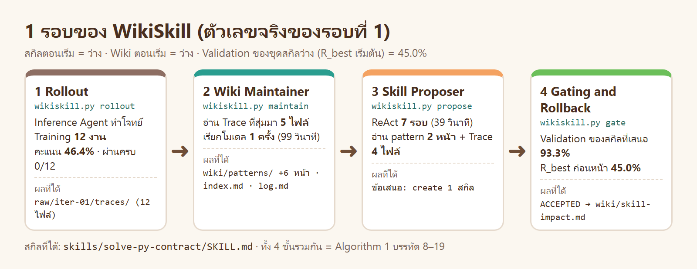
ตัวเลขจริงของรอบที่ 1 จาก runs/w1/ · 4 สไลด์ถัดไปเดินทีละขั้นตามภาพนี้
Rollout: Agent ทำโจทย์โดยไม่มีสกิล และไม่มีงานใดผ่านครบทุกข้อ
Agent (sonnet) ทำโจทย์ Training 4 ข้อ ข้อละ 3 รอบ ไม่มีสกิล ได้เฉลี่ย 46.4% ไม่มีงานใดผ่านครบทุกข้อ
โปรแกรมแปลง Trace ดิบของแต่ละงานเป็นไฟล์ที่อ่านได้ 1 ไฟล์ และสรุปทั้ง 12 งานไว้ใน summary.md
| trace_id | ผล | คะแนน | ข้อตรวจที่ไม่ผ่าน |
| t1-cafe-bill-r1 | FAIL | 0.50 | reject_value reject_type cli_ok cli_error tests |
| t4-cashback-r1 | FAIL | 0.40 | reject_value reject_type cli_ok cli_error tests policy |rollout · รูปแบบของ Trace และ summary.md: รูปแบบ ข้อ 5–6Wiki Maintainer: เรียกโมเดลครั้งเดียว เปลี่ยน Trace เป็นหน้า pattern
create_patterns 6 หน้า · update_index · append_logเรียกโมเดล 1 ครั้ง ใช้ 99 วินาที · ได้ pattern 6 หน้า และ index.md 6 บรรทัด
maintain: สุ่ม Trace → เรียกโมเดล 1 ครั้งโดยไม่มีเครื่องมือ → โปรแกรมเขียนไฟล์ wiki ตามคำตอบ (รูปแบบ ข้อ 7) · prompt maintainer.md ต้องบอก 3 เรื่อง: วิธีวิเคราะห์ Trace · โครงของหน้า pattern · กติกาของ indexpattern 6 หน้าของรอบที่ 1: จดทั้งสิ่งที่ผิด สิ่งที่ทำถูก และสิ่งที่ยังไม่รู้
missing-input-validation
ชนิด: ล้มเหลว
ข้อตรวจที่เกี่ยว: reject_value reject_type
missing-cli-entrypoint
ชนิด: ล้มเหลว
ข้อตรวจที่เกี่ยว: cli_ok cli_error
missing-test-file
ชนิด: ล้มเหลว
ข้อตรวจที่เกี่ยว: tests
shallow-self-check
ชนิด: พฤติกรรมของ Agent
ข้อตรวจที่เกี่ยว: ทุกข้อ (Agent ตรวจแค่กรณีปกติแล้วบอกว่าถูก)
integer-money-arithmetic
ชนิด: สำเร็จ
ข้อตรวจที่เกี่ยว: basic no_drift half_up (สิ่งที่ Agent ทำถูกอยู่แล้ว ให้คงไว้)
policy-ambiguous-edge-cases
ชนิด: ล้มเหลว · ยังไม่ยืนยันสาเหตุ
ข้อตรวจที่เกี่ยว: policy
Skill Proposer เลือกเปิดไฟล์เอง: ไม่ได้อ่านทุก Trace และไม่ได้อ่านทุกหน้าของ Wiki
Proposer ได้รับ index.md + skill-impact.md + summary.md แล้วเปิดไฟล์เองตามลำดับนี้ (จาก state.json)
1 traces/t1-cafe-bill-r1.md
2 traces/t2-split-bill-r2.md
3 traces/t3-shipping-fee-r1.md
4 traces/t4-cashback-r2.md
5 wiki/patterns/missing-input-validation.md
6 wiki/patterns/missing-cli-entrypoint.mdข้อเสนอของรอบที่ 1: สร้างสกิลใหม่ พร้อม PURPOSE.md ที่ชี้กลับไปยัง Wiki
ข้อเสนอ: create สกิล solve-py-contract (96 บรรทัด) พร้อม PURPOSE.md ที่ชี้กลับไปยัง pattern ใน Wiki
## pattern ใน wiki ที่แก้
- `wiki/patterns/missing-input-validation.md`
- `wiki/patterns/missing-cli-entrypoint.md`
- `wiki/patterns/missing-test-file.md`
- `wiki/patterns/shallow-self-check.md` (ส่วนรายการตรวจก่อนตอบ)
ไม่ได้แตะ `wiki/patterns/policy-ambiguous-edge-cases.md` เพราะยังไม่ยืนยันสาเหตุ …propose: เรียกโมเดล 1 เซสชันที่มีเครื่องมือ Read อย่างเดียว → โปรแกรมนำข้อเสนอไปสร้างชุดสกิลที่เสนอ (รูปแบบ ข้อ 8) · prompt proposer.md ต้องบอก 3 เรื่อง: ลำดับการทำงาน · รูปแบบข้อเสนอ · กติกาGating and Rollback: สกิลที่เสนอได้คะแนนมากกว่า R_best จึงรับ
candidate/โปรแกรมวางสกิลที่เสนอไว้ในโฟลเดอร์ candidate/ (ยังไม่ใช่สกิลที่ใช้งาน) แล้วให้ Agent ทำโจทย์ Validation 2 ข้อ × 3 รอบ
จากนั้นโปรแกรมจดลง wiki/skill-impact.md (ชื่อสกิล · diff ทั้งหมด · คะแนน · ผล) · R_best ยังไม่ถึง 100% วงรอบจึงทำรอบที่ 2 ต่อ
gate · เงื่อนไขหยุดของวงรอบอยู่ในคำสั่ง loop (รูปแบบ ข้อ 9)รอบที่ 2: Wiki Maintainer ไม่ได้เริ่มจากศูนย์
รอบที่ 2 Agent ทำโจทย์ Training ด้วยสกิลของรอบที่ 1 ได้ 89.5% (ผ่านครบ 2/12) · รอบนี้ได้ Trace ที่ไม่ผ่าน 5 + ผ่าน 2 และ Wiki ของรอบที่ 1
1สร้าง pattern ใหม่ 1 หน้า
too-few-test-methods.md: มีไฟล์เทสต์แล้ว แต่นับได้ 4–5 เทสต์ (ต้องมีอย่างน้อย 6) เพราะ subTest หลายชุดในเมธอดเดียวนับเป็น 1 · งานที่ผ่านมี 6, 7, 9 เทสต์
2เติม หน้าเดิม 6 หน้า ไม่สร้างซ้ำ
แต่ละหน้าได้หัวข้อ "อัปเดตรอบ 2" บอกว่าปัญหานั้นแก้ได้แล้วหรือยังเกิดอยู่
3แก้ index.md
ทุกบรรทัดขึ้นต้นด้วยสถานะ: แก้ได้แล้ว 4 หน้า · ดีขึ้นมาก 1 หน้า · ยังเกิดอยู่ 2 หน้า
## อัปเดตรอบ 2: แก้ได้แล้ว ← wiki/patterns/missing-cli-entrypoint.md
- `cli_ok` และ `cli_error` ผ่านครบในทั้ง 7 Trace ที่สุ่มมา ทุกงานมีบล็อก `if __name__ == "__main__":` ที่คัดจากสกิล `solve-py-contract` …Skill Proposer อ่านน้อยลง เพราะ index บอกแล้วว่าเรื่องใดจบ เรื่องใดยังเปิดอยู่ตารางหลัก
| รอบที่ 1 | รอบที่ 2 | |
|---|---|---|
| pattern ที่เปิด | 2 จาก 6 หน้า | 1 จาก 7 หน้า (หน้าใหม่) |
| Trace ที่เปิด | 4 | 4 |
| ไฟล์อื่น | – | SKILL.md ของสกิลเดิม |
| ข้อเสนอ | create ทั้งสกิล (96 บรรทัด) | patch เฉพาะส่วนเทสต์ (เป็น 107 บรรทัด) |
| เวลา | 39 วินาที | 20 วินาที |
| Validation | 93.3% → ACCEPTED | 100.0% → ACCEPTED → วงรอบหยุด |
def test_... แยกกัน และให้ดูบรรทัด Ran N tests ก่อนจบ · ส่วนอื่นของสกิลที่ผ่านอยู่แล้วไม่ถูกแตะ (ข้อ 8.9)สองเรื่องที่ต้องรู้เกี่ยวกับตัวอย่างจริงนี้
เรื่องที่ Wiki จดไว้ แต่สกิลไม่แก้
ข้อตรวจ policy ไม่ผ่านทั้ง 2 รอบ · หน้า policy-ambiguous-edge-cases.md รวบรวมเบาะแสและตั้งสมมติฐานไว้ แต่ระบุว่า "ยังไม่ยืนยันสาเหตุ" Proposer จึงไม่ใส่ลงสกิล · เรื่องนี้อธิบายต่อใน ขั้น 10
ข้อจำกัดของตัวอย่างจริง
ใน 3 การรันของบทนี้ (w1 w2 n1) ข้อเสนอผ่าน Gate ทั้ง 4 ครั้ง จึงไม่มีตัวอย่างจริงของการย้อนกลับ (ข้อ 8.3) · กลไกนั้นอธิบายจากกรณีศึกษาของเปเปอร์ (ข้อ 9.4) และเห็นได้จากการทดสอบด้วย Agent จำลองใน LAB 0.1
Algorithm 1 ทีละบรรทัด: 1 คำสั่งของ wikiskill.py = 1 กลุ่มบรรทัด
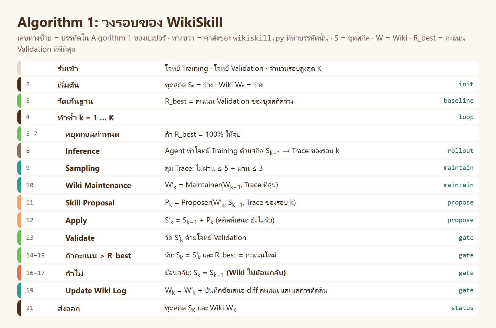
เลขทางซ้าย = บรรทัดใน Algorithm 1 ของเปเปอร์ · ทางขวา = คำสั่งที่ทำบรรทัดนั้น · คลิกภาพเพื่อขยาย
Algorithm 1 ฉบับอ่านง่าย: สถานะของระบบมี 3 ตัว
สถานะของระบบมี 3 ตัว: ชุดสกิล S · Wiki W · คะแนน Validation ที่ดีที่สุด R_best
รับเข้า โจทย์ Training · โจทย์ Validation · จำนวนรอบสูงสุด K
2 S ← ว่าง W ← ว่าง
3 R_best ← คะแนน Validation ของ S # เส้นฐาน: ยังไม่มีสกิล
4 ทำซ้ำ k = 1 … K
5 ถ้า R_best = 100% → จบ
8 Trace_k ← Inference Agent ทำโจทย์ Training ด้วย S
9 ตัวอย่าง ← สุ่มจาก Trace_k (ไม่ผ่าน ≤ 5 · ผ่าน ≤ 3)
10 W ← Wiki Maintainer(W, ตัวอย่าง) # ความรู้ของรอบนี้เข้า Wiki
11 ข้อเสนอ ← Skill Proposer(W, S, Trace_k) # create / patch สกิล 1 ตัว
12 S′ ← S ที่ใส่ข้อเสนอแล้ว # ยังไม่รับ
13 คะแนน ← คะแนน Validation ของ S′
14 ถ้า คะแนน > R_best → S ← S′ , R_best ← คะแนน # รับ
16 ถ้าไม่ → S คงเดิม # ย้อนกลับเฉพาะสกิล
19 W ← W + บันทึก(ข้อเสนอ, diff, คะแนน, รับ/ไม่รับ) # ทำทั้งสองกรณี
21 ส่งออก S และ Wสามบรรทัดที่ทำให้ WikiSkill ต่างจากวงรอบทั่วไป
บรรทัด 10
ความรู้ของรอบนี้ถูกเขียนลง Wiki ก่อน เสนอแก้สกิล
ถ้าตัดออก: Proposer ต้องวิเคราะห์ Trace ใหม่ทุกรอบ ไม่มีอะไรสะสม
บรรทัด 16
ย้อนกลับเฉพาะ S ไม่แตะ W
ถ้าตัดออก: ความรู้ที่ได้จากรอบที่ล้มเหลวหายไปด้วย
บรรทัด 19
จดผลของข้อเสนอลง W ทุกครั้ง ทั้งรับและไม่รับ
ถ้าตัดออก: รอบถัดไปไม่รู้ว่าอะไรเคยลองแล้วไม่ได้ผล
สถานะจริงของ w1: W โตขึ้นทุกรอบ · S เปลี่ยนเฉพาะเมื่อผ่าน Gate
W: ว่าง
solve-py-contract (96 บรรทัด)W: 6 pattern + log 1 รอบ + skill-impact 1 รายการ
solve-py-contract (107 บรรทัด)W: 7 pattern (ใหม่ 1 · เติม 6) + skill-impact 2 รายการ
วิธีคิดในการออกแบบ
ส่วนนี้ตอบว่า ทำไม WikiSkill จึงออกแบบเช่นนี้ ทีละการตัดสินใจ · แต่ละข้อมี: คำถาม → ทางเลือก → สิ่งที่เลือก → เหตุผล → อยู่ตรงไหนของโค้ด
สกิลต้องสั้น ความรู้จึงต้องมีชั้นของตัวเอง
Raw Layer ห้ามแก้ เพราะ Wiki เป็นการตีความ และการตีความผิดได้
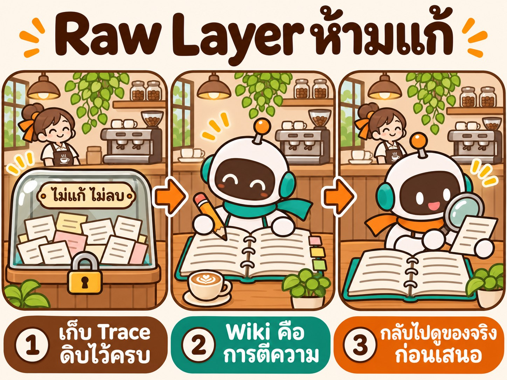
ย้อนกลับเฉพาะสกิล: การทดลองที่ล้มเหลวคือความรู้ชิ้นใหม่

Inference Agent ห้ามอ่าน Wiki: ความผิดพลาดคือสัญญาณที่ใช้ปรับสกิล

skills/ถ้า Agent อ่าน Wiki ได้ Trace จะดูดี และสกิลจะไม่ครบในตัวเอง
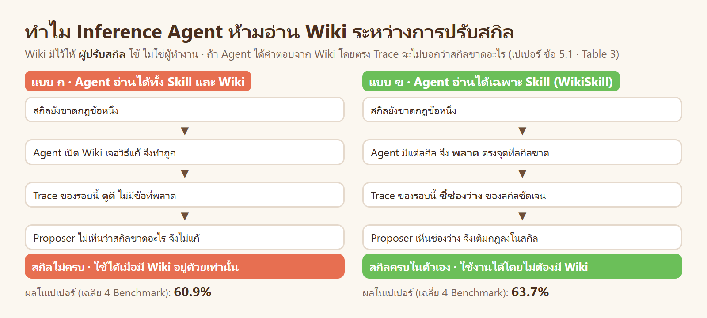
หลักฐานในเปเปอร์: Table 3: ให้ Agent อ่าน Wiki ด้วย คะแนนเฉลี่ยลดจาก 63.7% เป็น 60.9%
แยก 2 บทบาท: Wiki Maintainer วินิจฉัย · Skill Proposer สั่งยา
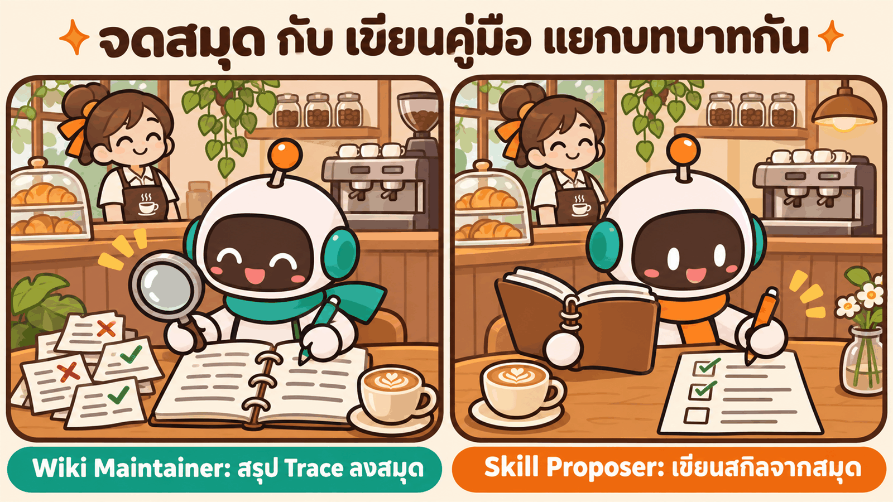
skill-impact.md เขียนโดยโปรแกรม เพราะเป็นข้อเท็จจริงจากการวัด
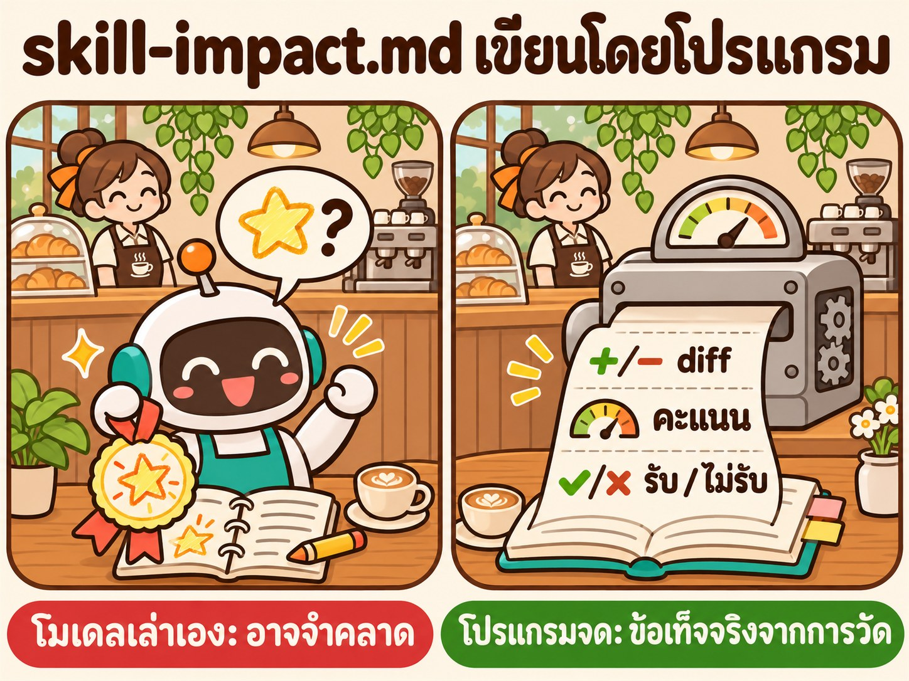
Skill Proposer อ่านความรู้ทีละชั้น: index → pattern → Trace
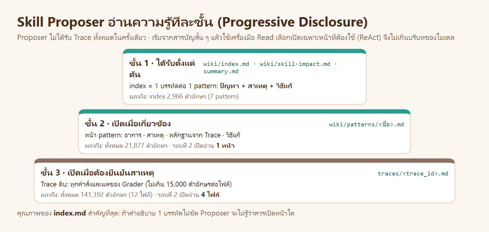
ได้รับเฉพาะสารบัญตั้งแต่ต้น แล้วใช้เครื่องมือ Read เปิดเฉพาะหน้าที่ต้องใช้ (ReAct = คิด → เปิดไฟล์ → คิดต่อ)
ทำไม Skill Proposer ต้องเป็น ReAct และเริ่มจาก index
คำถาม
ทำไมไม่ส่ง Wiki และ Trace ทั้งหมดให้ Proposer ในครั้งเดียว
WikiSkill เลือก
ให้เฉพาะ index.md + skill-impact.md + สรุปผล แล้วให้ Proposer ใช้เครื่องมือ Read เปิดไฟล์ที่ต้องการเอง (ReAct = คิด → เปิดไฟล์ → คิดต่อ)
เหตุผล
บริบทของโมเดลมีจำกัด และ Trace ยาว
เหตุผล
ต้นทุนไม่โตตามจำนวนโจทย์: ต่อรอบใช้ 1 + T_ReAct ครั้ง ไม่ว่าจะมี Training 12 หรือ 1,200 งาน
เหตุผล
บังคับให้ Wiki ต้องดี: ถ้าบรรทัดใน index ไม่ชัด หน้านั้นจะไม่ถูกเปิด prompt ของ Maintainer จึงกำหนดว่า 1 บรรทัดต้องมี ปัญหา + สาเหตุ + วิธีแก้
สุ่ม Trace ให้ Wiki Maintainer จำนวนคงที่ และมีทั้งที่ผ่านและไม่ผ่าน
WikiSkill เลือก
ต่อรอบ: ไม่ผ่านไม่เกิน 5 + ผ่านไม่เกิน 3 · แต่ละ Trace ไม่เกิน 15,000 ตัวอักษร
เหตุผล
Trace ที่ไม่ผ่านใช้หาสาเหตุ
เหตุผล
Trace ที่ผ่านใช้ดูว่า ทำอย่างไรจึงถูก (หลายครั้งวิธีแก้อยู่ใน Trace ที่ผ่านอยู่แล้ว) และกันไม่ให้ข้อเสนอใหม่ทำของที่ดีอยู่พัง
เหตุผล
จำนวนคงที่ทำให้ Maintainer เรียกโมเดล 1 ครั้งต่อรอบเสมอ
ข้อเสนอต้องเล็ก: 1 สกิลต่อรอบ และแก้แบบ patch
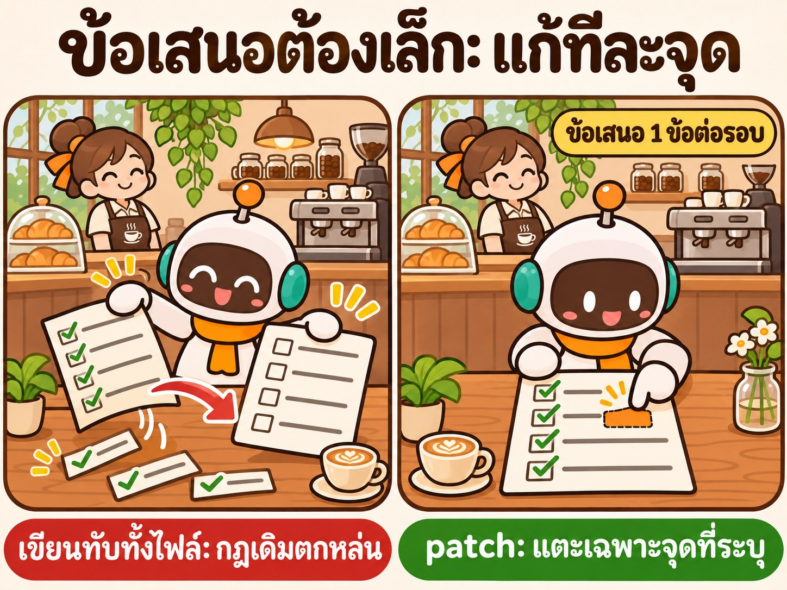
append / replace / insert_after ไม่เขียนทับทั้งไฟล์skill-impact.mdGate รับเฉพาะเมื่อดีกว่า R_best และหยุดเมื่อได้ 100%
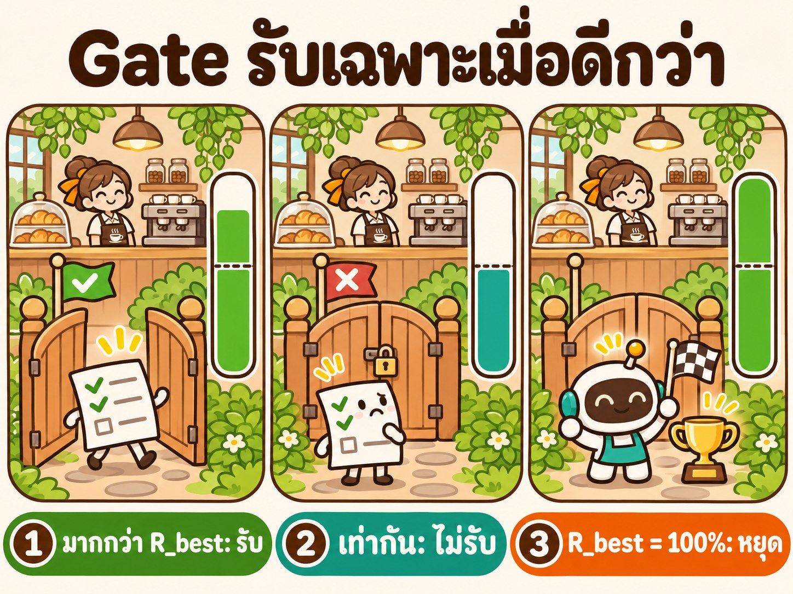
สรุป: หลัก 7 ข้อ และผลในระบบ
1แยกของดิบ ความรู้ และขั้นตอน
3 ชั้น 3 โฟลเดอร์
2ความรู้ต้องสะสม
Wiki ไม่ย้อนกลับ · หน้าเดิมถูกเติมหลักฐาน ไม่สร้างซ้ำ
3สิ่งที่ใช้งานต้องปลอดภัย
สกิลผ่าน Gate เท่านั้น และย้อนกลับได้
4ข้อเท็จจริงมาจากการวัด
skill-impact.md เขียนโดยโปรแกรม
5สัญญาณต้องไม่ถูกกลบ
Agent ที่ทำงานไม่เห็น Wiki
6บริบทมีจำกัด
สุ่ม Trace · index 1 บรรทัดต่อ pattern · Proposer เลือกเปิดเอง
7รู้ว่าอะไรได้ผล
ข้อเสนอ 1 ข้อต่อรอบ · patch ทีละจุด
หลักฐาน: ในเปเปอร์ และในโจทย์ของบทนี้
ต่างจากวิธีอื่น และจาก Skill Optimizer ของบท 05 อย่างไร · เปเปอร์กับบทนี้ต่างกันตรงไหน · ผลจริงยืนยันหรือแย้งกับเปเปอร์ข้อใด
ทุกวิธีใช้วงรอบเดียวกัน ต่างกันที่วิธีเก็บสิ่งที่เรียนรู้
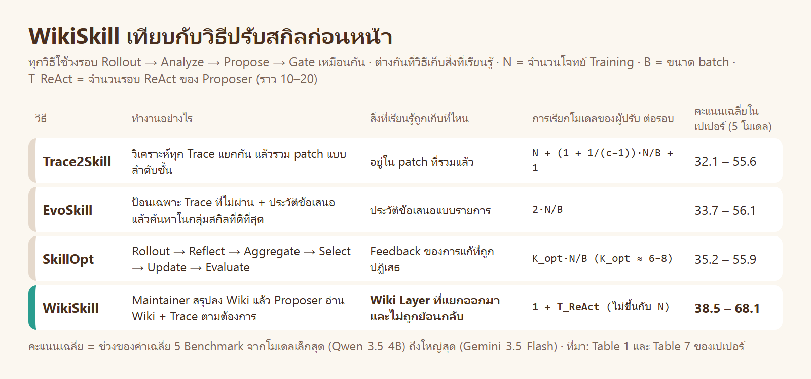
WikiSkill เก็บใน Wiki Layer ที่แยกออกมาและไม่ถูกย้อนกลับ · การเรียกโมเดลของผู้ปรับสกิลต่อรอบไม่ขึ้นกับจำนวนโจทย์ Training
WikiSkill ทำต่างจาก 3 วิธีก่อนหน้าอย่างไร
Trace2Skill
จุดเด่น: วิเคราะห์ทุก Trace แบบขนาน แล้วรวม patch เป็นลำดับชั้น
สิ่งที่ WikiSkill ทำต่างออกไป: ไม่วิเคราะห์ทุก Trace: Maintainer ดูตัวอย่าง Proposer เลือกเปิดเอง · ต้นทุนไม่โตตามจำนวนโจทย์
EvoSkill
จุดเด่น: เก็บกลุ่มสกิลที่ดีที่สุดไว้หลายตัว และมีประวัติข้อเสนอ
สิ่งที่ WikiSkill ทำต่างออกไป: ประวัติไม่ได้เป็นแค่รายการ แต่ถูกจัดเป็น pattern ที่มีสาเหตุและหลักฐาน
SkillOpt
จุดเด่น: ไพป์ไลน์ 6 ขั้น และใช้ feedback ของการแก้ที่ถูกปฏิเสธ
สิ่งที่ WikiSkill ทำต่างออกไป: ความรู้อยู่ในชั้นแยกที่ไม่ถูกย้อนกลับ ใช้ได้ข้ามทุกรอบ
บท 05 คนกำกับทีละรุ่น · บทนี้โมเดล 2 บทบาทรันเองทั้งวงรอบตารางหลัก
| Skill Optimizer (บท 05) | WikiSkill (บทนี้) | |
|---|---|---|
| ผู้วิเคราะห์และผู้แก้สกิล | Claude ใน Claude Code Desktop ตามพรอมต์ของคน ทีละรุ่น | โมเดล 2 บทบาท รันเองทั้งวงรอบ |
| สกิลเริ่มต้น | v0 ที่คนเขียน | ว่าง · ต้องค้นพบกฎจาก Trace เอง |
| ความรู้แฝงที่ไม่มีในโจทย์ | คนเขียนลงสกิล และตอบเมื่อ Claude ถาม (นโยบายธุรกิจ) | ค้นพบเองได้เฉพาะส่วนที่ Trace และ Validation แสดง |
| ที่เก็บความรู้ | ISSUES.md 1 ไฟล์ ที่ Claude จดตามรูปแบบที่ตกลงไว้ | wiki/ : patterns + index + log + skill-impact |
| ขนาดการแก้ต่อรอบ | ไม่เกิน 3 จุด | ข้อเสนอ 1 ข้อ ต่อสกิล 1 ตัว |
| เกณฑ์ของ Gate | Training และ Validation ไม่ลดเกินเกณฑ์ และคะแนนรวมขึ้นเกินความแกว่ง หรือต้นทุนลด ≥ 10% | Validation มากกว่า R_best |
| ความแกว่งของการวัด | คิดจากการรันซ้ำ แล้วใช้เป็นเกณฑ์ | ไม่คิด (เปเปอร์ชดเชยด้วยการรันทั้งกระบวนการ 3 ครั้ง) |
| ต้นทุนเป็นเป้าหมายด้วยหรือไม่ | ใช่ | ไม่ · หยุดเมื่อ Validation 100% |
| ชุดที่ใช้วัดผลสุดท้าย | ไม่มี Test Set | มี Test Set 3 ข้อ |
ผลในเปเปอร์: WikiSkill ได้ค่าเฉลี่ยสูงสุดทุกโมเดล
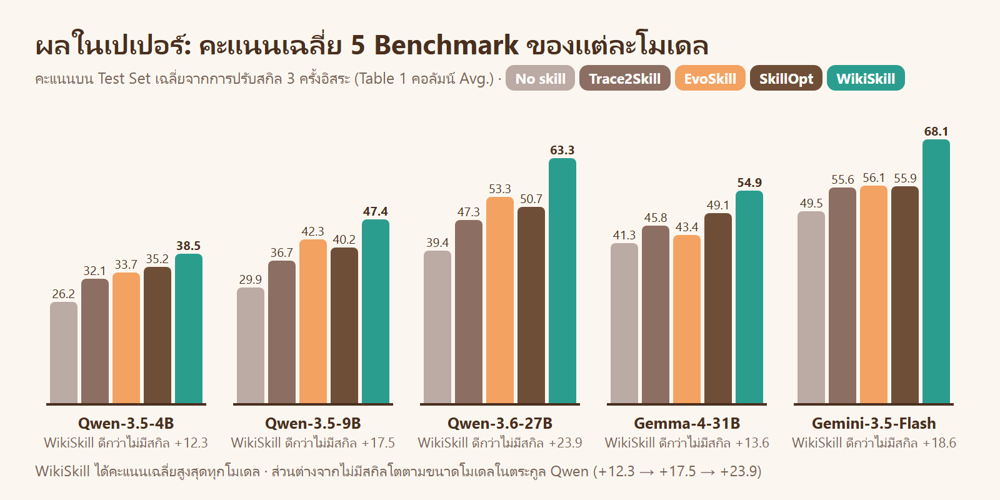
เปเปอร์ทดลอง 5 Benchmark (คณิตศาสตร์ · ค้นเว็บ · สเปรดชีต · เอกสารยาว · งานบ้านจำลอง) กับ 5 โมเดล
ข้อค้นพบหลัก 5 ข้อ
1WikiSkill ได้ค่าเฉลี่ยสูงสุดทุกโมเดล
ชนะวิธีที่ดีที่สุดรองลงมา 3.3 ถึง 12.0 จุด
2โมเดลใหญ่ได้ประโยชน์จากสกิลมากกว่า
Qwen 4B / 9B / 27B ดีขึ้น +12.3 / +17.5 / +23.9 จุด
3โมเดลเล็กที่มีสกิล ชนะโมเดลใหญ่ที่ไม่มีสกิล
Qwen-9B + WikiSkill 47.4% เทียบกับ Qwen-27B ไม่มีสกิล 39.4%
4สกิลย้ายข้ามโมเดลได้ และบางครั้งดีกว่าสกิลที่โมเดลปรับเอง
ALFWorld: Qwen-9B ใช้สกิลของ 27B ได้ 70.2% · ใช้สกิลของตัวเองได้ 63.4%
5แต่สกิลจากโมเดลเล็กอาจถ่วงโมเดลใหญ่
SpreadSheet: Gemini ใช้สกิลของ Qwen-4B ลดจาก 50.5% เหลือ 18.1% (สกิลเต็มไปด้วยวิธีเลี่ยงข้อจำกัดของโมเดลเล็ก)
Ablation: Wiki ที่สะสมข้ามรอบคือส่วนที่ทำให้ดีขึ้นมากที่สุด
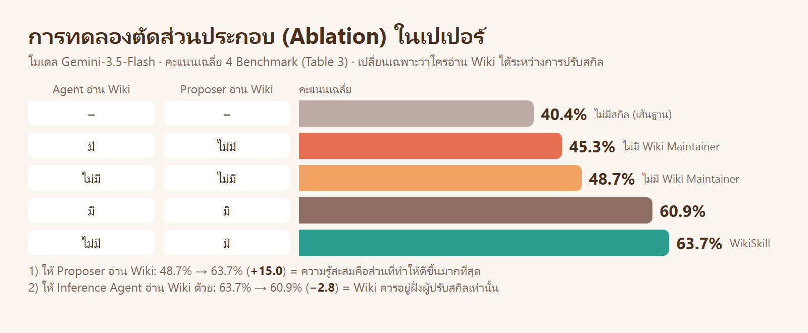
การตัดส่วนประกอบยืนยันการออกแบบ 2 ข้อ: Wiki ที่สะสมข้ามรอบคือส่วนที่ทำให้ดีขึ้นมากที่สุด (ข้อ 8.3, 8.7) และ Wiki ควรอยู่ฝั่งผู้ปรับสกิลเท่านั้น (ข้อ 8.4)
พลวัตในเปเปอร์: ข้อเสนอส่วนใหญ่ถูกปฏิเสธ แต่ Wiki โตทุกรอบ
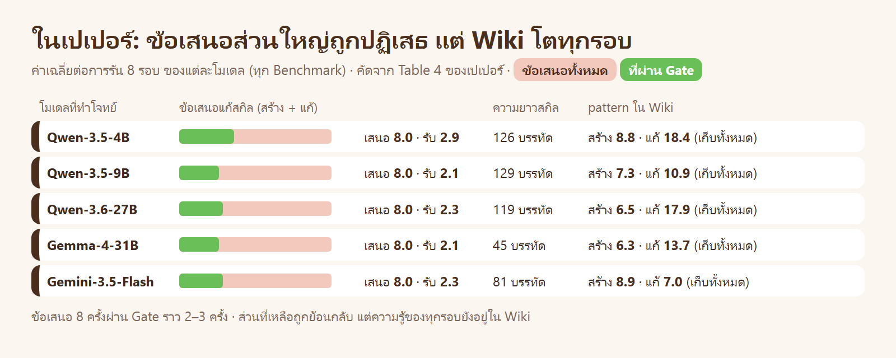
เปเปอร์นับว่าใน 1 การรัน (8 รอบ) มีข้อเสนอกี่ครั้ง ผ่าน Gate กี่ครั้ง และ Wiki โตเท่าไร (Table 4)
การย้อนกลับเป็นเรื่องปกติของวงรอบ ไม่ใช่ข้อผิดพลาด
1ข้อเสนอส่วนใหญ่ ไม่ผ่าน Gate
เสนอ 8 ครั้ง ผ่าน 2.1–2.9 ครั้ง
การย้อนกลับเป็นเรื่องปกติของวงรอบ ไม่ใช่ข้อผิดพลาด
2Wiki โตทุกรอบ และไม่ถูกลบ
สร้าง 6.3–8.9 หน้า · แก้ 7.0–18.4 ครั้ง
ความรู้ของรอบที่ถูกปฏิเสธยังถูกเก็บ
3สกิลที่ได้สั้น
45–129 บรรทัด
ความรู้ส่วนใหญ่อยู่ใน Wiki สกิลมีแต่สิ่งที่ต้องทำ
4การรับเกิดตลอดการรัน
39–52% ของการรับเกิดใน 2 รอบแรก ที่เหลือเกิดในรอบกลางและรอบท้าย
รอบหลัง ๆ ยังปรับสกิลได้ เพราะมีความรู้สะสมให้ใช้
กรณีศึกษา: ข้อเสนอที่ถูกปฏิเสธ ทำให้รอบถัดมาเสนอกฎที่เจาะจงกว่า
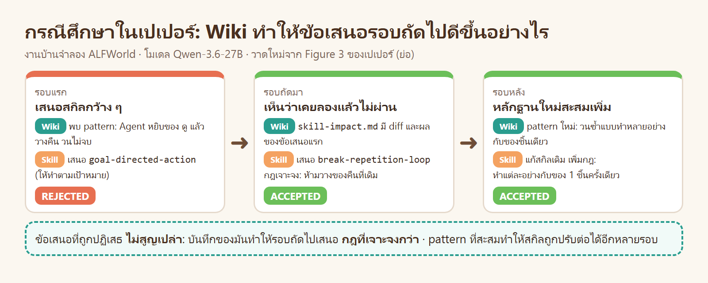
กรณีศึกษา (Figure 3 ของเปเปอร์ · ALFWorld): ข้อเสนอแรก goal-directed-action ถูกปฏิเสธ · skill-impact.md เก็บ diff และผลไว้ · รอบถัดมา Proposer จึงเสนอ break-repetition-loop ที่มีกฎเจาะจงว่า "ห้ามวางของคืนที่เดิม" และผ่าน · รอบหลังมี pattern ใหม่ จึงแก้สกิลเดิมเพิ่มอีก 1 กฎ
ต้นทุนของผู้ปรับสกิลต่อรอบ ไม่ขึ้นกับจำนวนโจทย์ Training
นำมาใช้กับโจทย์ของบทนี้
ขั้นนี้ตอบว่าเมื่อนำ WikiSkill มาใช้กับโจทย์คิดเงินของร้าน BaanKafe (โจทย์เดียวกับบท 05) อะไรเหมือนเปเปอร์ อะไรต่าง และผลจริงบอกอะไร
ผลจริงของบทนี้: เริ่มจากไม่มีสกิล ได้ 97.9% ใน 2 รอบ และ 100% บน Test Setผลจริง runs/
w1w1w2 ได้ 97.8%เปเปอร์กับบทนี้ต่างกัน 6 ประเด็น และมีผลต่อการอ่านผล
งาน
ในเปเปอร์: 5 Benchmark หลายร้อยโจทย์
ในบทนี้: ฟังก์ชันคิดเงิน 9 ข้อ
ผลต่อการอ่านผล: งานเล็ก จบใน 1–2 รอบ (เปเปอร์รัน 8 รอบ)
Validation
ในเปเปอร์: ชุดใหญ่ต่อ Benchmark
ในบทนี้: 2 โจทย์ × 3 รอบ = 6 Trial
ผลต่อการอ่านผล: ได้ 100% ง่าย วงรอบหยุดเร็ว
การให้สกิลกับ Agent
ในเปเปอร์: ใส่เนื้อหาสกิลใน prompt
ในบทนี้: วางใน ./skills ให้ Agent เปิดอ่านเอง
ผลต่อการอ่านผล: Agent เปิดอ่านครบทุก Trial ในผลจริง
prompt ของ Maintainer และ Proposer
ในเปเปอร์: ภาคผนวก E
ในบทนี้: เขียนใหม่เป็นภาษาไทยใน LAB 0
ผลต่อการอ่านผล: ผลอาจต่างจากการใช้ prompt ต้นฉบับ
การรันซ้ำ
ในเปเปอร์: 3 ครั้งแล้วเฉลี่ย
ในบทนี้: 2 ครั้ง (w1 w2)
ผลต่อการอ่านผล: ผลต่างเล็ก ๆ ยังไม่ใช่ข้อสรุป
ความรู้แฝงเฉพาะงาน
ในเปเปอร์: ไม่มีในการทดลอง
ในบทนี้: นโยบายธุรกิจ 4 ข้อ อยู่ใน Training 2 โจทย์ ไม่มีใน Validation
ผลต่อการอ่านผล: คำถามใหม่ของบทนี้
ผลจริงตรงกับเปเปอร์ 4 จาก 6 ข้อ · อีก 2 ข้อต่าง เพราะงานเล็กและจบเร็วตารางหลัก
| ข้อค้นพบของเปเปอร์ | ผลจริงของบทนี้ | ตรงกันหรือไม่ |
|---|---|---|
| WikiSkill ดีกว่าการไม่มีสกิลมาก | 46.9% → 97.9% (w1) | ตรง |
| สกิลที่ได้ใช้กับงานที่ไม่เคยเห็นได้ | Test Set 100.0% (w1) และ 97.8% (w2) | ตรง |
| ตัด Wiki ออก คะแนนลดมาก (63.7% → 48.7%) | มี Wiki 97.9% และ 96.8% · ไม่มี Wiki 95.7% | ไม่เห็นผลชัด: โจทย์จบใน 1–2 รอบ ยังไม่มีความรู้ข้ามรอบให้สะสม |
| ข้อเสนอส่วนใหญ่ถูกปฏิเสธ | ผ่าน Gate ทั้ง 4 ครั้ง | ต่าง: งานง่ายกว่าและ Validation เล็ก |
| Wiki โตทุกรอบ หน้าเดิมถูกเติม ไม่สร้างซ้ำ | w1 รอบ 2: สร้าง 1 หน้า เติม 6 หน้า | ตรง |
| Proposer ใช้การเรียกโมเดลไม่ขึ้นกับจำนวนโจทย์ | 5–10 รอบ ReAct ต่อรอบ | ตรง |
สิ่งที่บทนี้พบเพิ่ม: ความรู้บางอย่างไม่อยู่ใน Trace
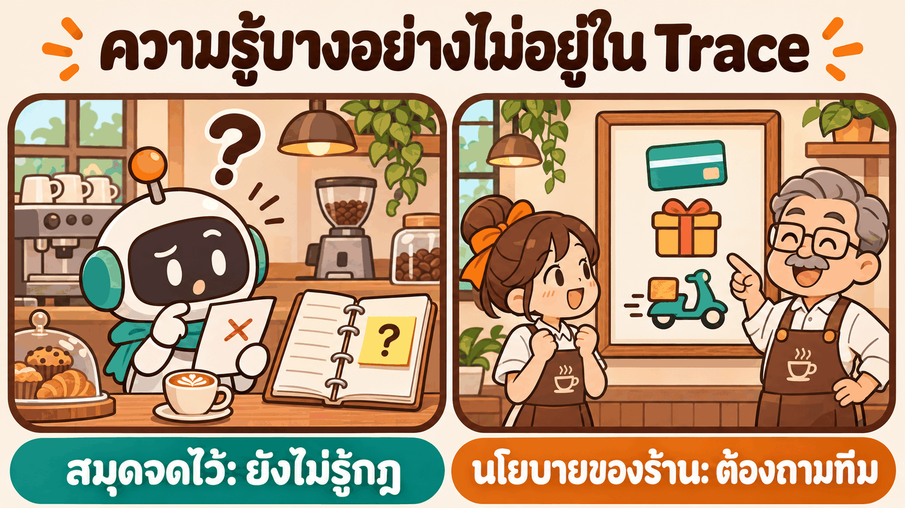
policy 0/6 ทุกการรันpolicy-ambiguous-edge-cases.md บอกว่าโจทย์ใด กรณีใด คาดอะไร ได้อะไร และตั้งสมมติฐานไว้ · LAB 5 ให้คนในทีมตอบ 4 ข้อ แล้วเติมลงสกิลด้วยวิธีของบท 05นโยบายธุรกิจไม่เข้าสกิล ด้วยเหตุผล 3 ชั้น และทุกชั้นมาจากการออกแบบที่ตั้งใจ
1Wiki Maintainer
กติกา: สิ่งที่ยังไม่แน่ใจให้เขียนว่า "ยังไม่ยืนยัน" ห้ามเดาแล้วเขียนเป็นข้อเท็จจริง
ผลกับนโยบายธุรกิจ: ตัวอย่างเดียวต่อโจทย์ไม่พอสรุปเป็นกฎ
2Skill Proposer
กติกา: สกิลเป็นวิธีทำงานทั่วไป ห้ามใส่คำตอบของโจทย์
ผลกับนโยบายธุรกิจ: กฎเฉพาะของฟังก์ชันค่าส่งและเงินคืนไม่ใช่วิธีทำงานทั่วไป
3Gate
กติกา: รับเมื่อ Validation ดีขึ้นเท่านั้น และหยุดเมื่อได้ 100%
ผลกับนโยบายธุรกิจ: Validation ไม่มีข้อตรวจ policy จึงได้ 100% โดยไม่ต้องรู้นโยบาย
ข้อสรุปของขั้น 10
วงรอบเรียนรู้ได้เท่าที่ Validation วัด
ความรู้ที่ Validation ไม่วัด ไม่มีทางผ่าน Gate เข้าสกิล แต่ Wiki ยังเก็บไว้ได้
ความรู้เฉพาะงานต้องมาพร้อมขอบเขต และต้องผ่านการวัดตารางหลัก
| รุ่น | เขียนนโยบายอย่างไร | Training | Validation | Test | gate ของบท 05 |
|---|---|---|---|---|---|
w1 | ไม่มี | 95.2% | 100.0% | 100.0% | – |
w1p | เป็นกติกาทั่วไป ("เงินที่ร้านจ่ายออก ให้ปัดลง") | 100.0% | 96.7% | 93.3% | REJECT |
w1q | กำกับขอบเขต ("ใช้กับฟังก์ชันคิดเงินคืนสมาชิกเท่านั้น") | 100.0% | 100.0% | 100.0% | ACCEPT |
w1p ยืนยันกติกาของ Skill Proposer จากอีกด้านหนึ่ง: ความรู้เฉพาะงานที่เขียนเป็นกติกาทั่วไปลามไปงานอื่น (งานคืนเงินคอร์สของ Test Set ถูกปัดลงตามไปด้วย) · ความรู้เฉพาะงานจึงต้องมาพร้อมขอบเขต และต้องผ่านการวัดกับโจทย์ที่ไม่ได้ใช้ตอนแก้ข้อจำกัด 6 ข้อ: สิ่งที่ WikiSkill ยังทำไม่ได้
1ไม่ได้ทดสอบการ เลือก สกิล
สกิลทุกตัวถูกใส่ให้ Agent ตรง ๆ ถ้ามีสกิลจำนวนมาก ต้องมีขั้นค้นหาสกิลเพิ่ม
ที่มา: เปเปอร์
2Gate เข้ม รับเฉพาะเมื่อดีขึ้น
ข้อเสนอที่ไม่ขึ้นทันทีแต่เป็นฐานของรอบถัดไปถูกทิ้ง
ที่มา: เปเปอร์
3Wiki โตอย่างเดียว ไม่มีการตัดแต่ง
รันยาวมาก ๆ Wiki จะใหญ่และมีหน้าที่ล้าสมัย
ที่มา: เปเปอร์
4ไม่ครอบคลุมงานที่ยาวหลายชั่วโมง
ยังไม่มีการปรับสกิลระหว่างทำงานชิ้นเดียว
ที่มา: เปเปอร์
5Validation ชุดเล็กแกว่ง
การรับและการหยุดขึ้นกับโชคของการวัดครั้งนั้น: w1 ทำ 2 รอบ w2 หยุดที่รอบเดียวและไม่รู้เกณฑ์จำนวนเทสต์
ที่มา: เปเปอร์ + ผลจริงของบทนี้
6เรียนรู้ได้เท่าที่ Validation วัด
ความรู้ที่ Validation ไม่มีข้อตรวจ (นโยบายธุรกิจ) ไม่เข้าสกิล ต้องให้คนเติม (ขั้น 10.3)
ที่มา: ผลจริงของบทนี้
ตรวจความเข้าใจ ข้อ 1–4
1 ทำไมสกิลที่ไม่ผ่าน Gate ถูกทิ้ง แต่บันทึกของมันยังอยู่ใน Wiki
สกิลที่ทำให้คะแนนแย่ลงเป็นอันตรายต่อการใช้งาน จึงต้องย้อนกลับ · แต่ข้อเท็จจริงว่า "เคยลองแบบนี้แล้วไม่ได้ผล" เป็นความรู้ที่ทำให้รอบถัดไปไม่เสนอซ้ำ จึงเก็บไว้ใน wiki/skill-impact.md (ข้อ 8.3)
2 ถ้าให้ Inference Agent อ่าน Wiki ได้ จะเกิดอะไรขึ้นกับสกิล
Agent ทำถูกเพราะ Wiki ไม่ใช่เพราะสกิล · Trace จึงไม่แสดงช่องว่างของสกิล · Proposer ไม่มีสัญญาณให้เติมสกิล · สกิลที่ได้ใช้ได้เฉพาะเมื่อมี Wiki อยู่ด้วย (ข้อ 8.4 · เปเปอร์: 63.7% → 60.9%)
3 บรรทัดใดของ Algorithm 1 ที่ทำให้ความรู้ของรอบที่ล้มเหลวไม่หาย
บรรทัด 10 (Wiki ถูกเขียนก่อนรู้ผลของ Gate) · บรรทัด 16 (ย้อนกลับเฉพาะสกิล) · บรรทัด 19 (จดผลของข้อเสนอทุกครั้ง)
4 ทำไมบรรทัดใน index.md ต้องมี ปัญหา + สาเหตุ + วิธีแก้
Proposer ได้รับเฉพาะ index ตั้งแต่ต้น แล้วเลือกเองว่าจะเปิดหน้าใด บรรทัดที่บอกไม่ครบทำให้หน้านั้นไม่ถูกเปิด ความรู้ในหน้านั้นจึงไม่ถูกใช้ (ข้อ 8.7)
ตอบเองก่อน แล้วคลิกที่คำถามเพื่อดูคำตอบ
ตรวจความเข้าใจ ข้อ 5–8
5 skill-impact.md ต่างจากไฟล์อื่นใน Wiki อย่างไร
เป็นไฟล์เดียวที่โปรแกรมเขียน ไม่ใช่โมเดล เพราะเป็นข้อเท็จจริงจากการวัด (diff · คะแนน · รับ/ไม่รับ) ซึ่งต้องเชื่อได้ทั้งหมด (ข้อ 8.6)
6 การเรียกโมเดลของผู้ปรับสกิลต่อรอบ ขึ้นกับจำนวนโจทย์ Training หรือไม่
ไม่ · Maintainer เรียก 1 ครั้งกับ Trace ตัวอย่างไม่เกิน 8 · Proposer เรียกตามจำนวนรอบ ReAct (ราว 10–20) · รวม 1 + T_ReAct ไม่ว่าจะมีโจทย์กี่ข้อ (ข้อ 8.7 · Table 7 ของเปเปอร์)
7 ทำไม WikiSkill ของบทนี้จึงไม่ใส่นโยบายธุรกิจลงสกิล ทั้งที่ Wiki จดเรื่องนี้ไว้
Maintainer จดว่ายังไม่ยืนยัน (ตัวอย่างเดียวต่อโจทย์) · Proposer ไม่ใส่กฎเฉพาะโจทย์ลงสกิล · Validation ไม่มีข้อตรวจนี้ จึงได้ 100% และวงรอบหยุด (ขั้น 10.3)
8 รุ่น w1p มีนโยบายถูกทุกข้อ ทำไมจึงถูกปฏิเสธ
นโยบายเฉพาะงานถูกเขียนเป็นกติกาทั่วไป Agent จึงนำไปใช้กับงานอื่น คะแนน Validation และ Test ลด · รุ่น w1q ใช้ความรู้ชุดเดิมแต่กำกับขอบเขต จึงผ่าน (ขั้น 10.3)
ตอบเองก่อน แล้วคลิกที่คำถามเพื่อดูคำตอบ
ต่อไป: ลงมือทำใน LAB
ภาคปฏิบัติ: สไลด์ของบท (LAB 0–5) · README หลัก · รูปแบบของ wikiskill
รายละเอียดเต็มของทฤษฎี: 01_theory/README.md · เปเปอร์: arXiv:2608.27454